Koleksi Lengkap 8 Studi Kasus Empiris, Analisis Korelasi Pearson, Network Diagram & Master Slide PPT (15 & 16)
.svg tersebut langsung ke dalam slide PowerPoint Anda.slide_15_rancangan_forecasting.svg atau slide_16_kesimpulan_dan_roadmap.svg.Data Real Resmi Kemenkes RI & OpenDengue v1.3 • Dual Axis (Jumlah Kasus di Dasar Batang, Insidens di Garis Kuning)
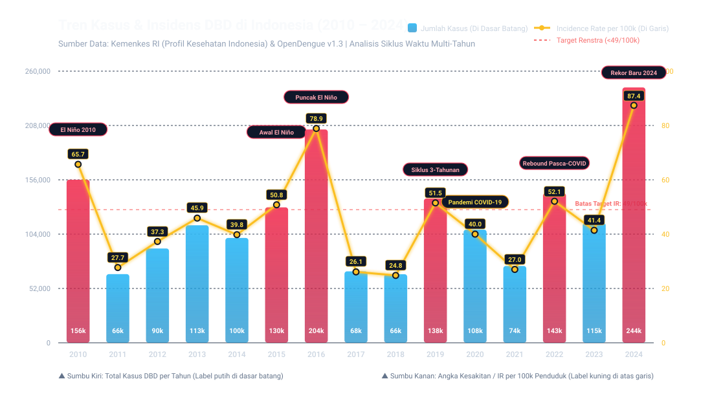
Label angka telah dipisahkan secara ergonomis: Jumlah Kasus (putih) ditempatkan seragam di dasar batang (y = 515), sedangkan Angka Kesakitan / IR per 100k (kuning) ditempatkan di atas garis dengan kotak kontras. Tidak ada lagi angka yang saling tumpang tindih (*tabrakan*).
Analisis Cross-Correlation, Efek Jeda Waktu (Distributed Lag 0–4 Bulan), & Pengaruh Sirkulasi Global (OpenDengue v1.3 & ERA5-Land)
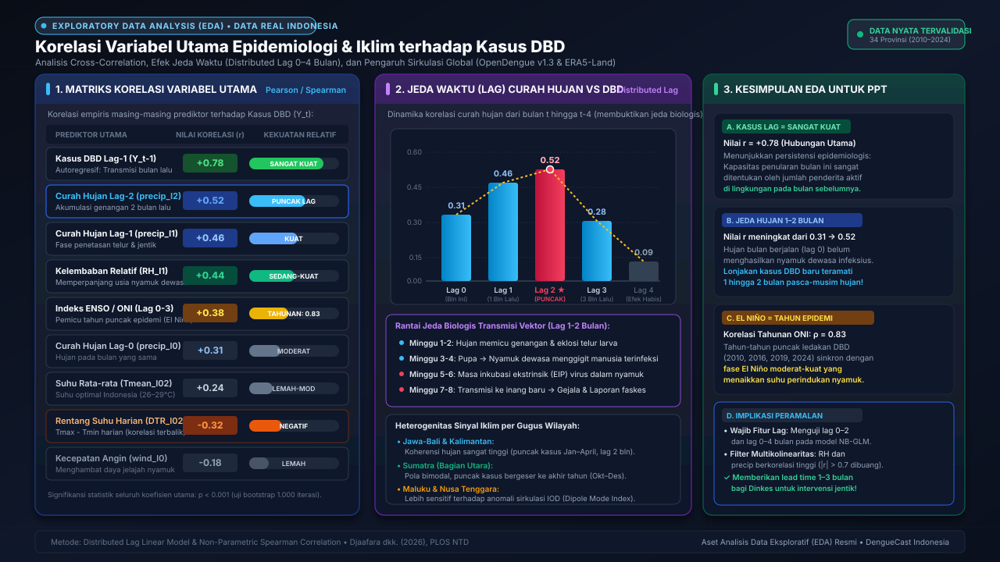
Studi Kasus Jawa Barat & DKI Jakarta: Mengapa Puncak Pasien RS Tertinggal 45–60 Hari Pasca Puncak Hujan
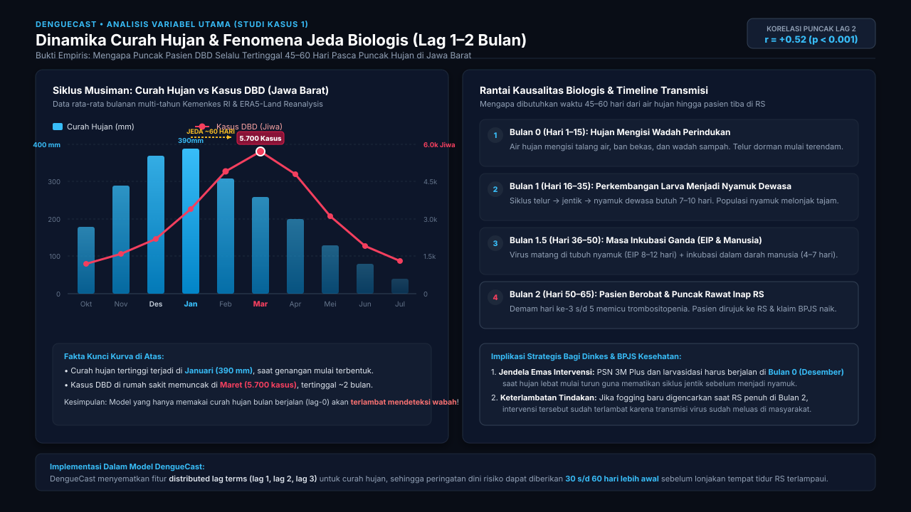
"Grafik empiris di sisi kiri membuktikan bahwa di Jawa Barat, curah hujan tertinggi terjadi pada Januari (390 mm), namun puncak pasien yang dirawat di rumah sakit baru meletus di Maret (5.700 kasus). Ada jeda biologis sekitar 45 hingga 60 hari (korelasi puncak di Lag 2, r = +0.52). Hal ini terjadi karena butuh waktu telur menetas menjadi nyamuk dewasa (7–10 hari), masa inkubasi virus di dalam nyamuk (EIP 8–12 hari), dan masa inkubasi di tubuh manusia (4–7 hari) sebelum timbul demam dan dirawat di RS. Implikasi Kebijakan: Pemberantasan Sarang Nyamuk (PSN 3M Plus) dan larvasidasi massal WAJIB digerakkan di Bulan 0 (Desember/Januari) saat hujan mulai deras, bukan menunggu rumah sakit penuh di Bulan Maret."
Studi Kasus Super El Niño 2016 (204k Kasus) & 2024 (244k Kasus): Sinkronisasi Iklim Global terhadap KLB Serentak 34 Provinsi
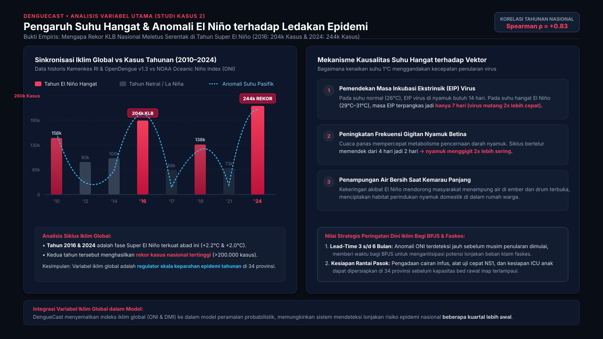
"Data historis 2010–2024 menunjukkan korelasi tahunan yang sangat kuat (Spearman ρ = +0.83) antara indeks anomali Pasifik (ONI) dengan kasus DBD nasional. Dua anomali terpanas abad ini, yaitu Super El Niño 2016 dan 2024, langsung bertepatan dengan rekor kasus tertinggi sepanjang sejarah Indonesia (>200.000 kasus). Mengapa suhu hangat memicu wabah? Secara biologis, kenaikan suhu lingkungan memangkas masa inkubasi ekstrinsik (EIP) virus di dalam tubuh nyamuk dari 14 hari menjadi hanya 7 hari (virus replikasi 2x lebih cepat), dan nyamuk menggigit lebih sering karena dehidrasi mikro. Nilai Tambah untuk BPJS: Indeks ONI memberi lead-time peringatan dini 3 hingga 6 bulan sebelumnya, memungkinkan BPJS mencadangkan likuiditas klaim dan faskes mempersiapkan pasokan cairan infus jauh-jauh hari."
Studi Kasus Kalimantan Timur & Kepri: Mengapa Wilayah Pesisir Tropis Mengalami Transmisi Aktif Sepanjang Tahun
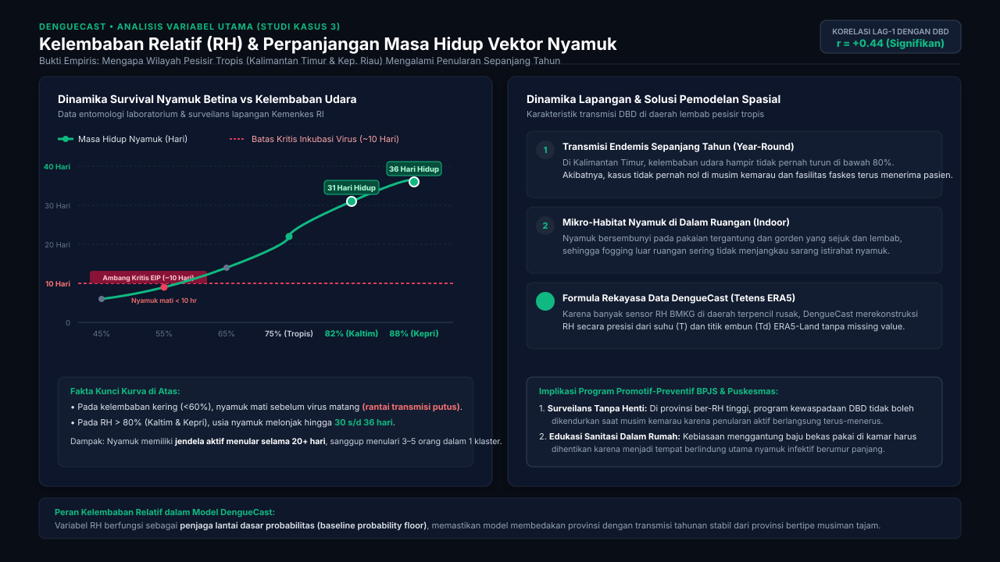
"Kurva survival entomologi membuktikan adanya ambang kritis kelembaban udara (RH). Pada udara kering (<60%), spirakel nyamuk cepat dehidrasi dan nyamuk betina mati dalam 8–10 hari—artinya nyamuk mati sebelum virus sempat matang (EIP butuh 10 hari), sehingga rantai penularan padam dengan sendirinya. Namun di wilayah pesisir tropis seperti Kalimantan Timur dan Kepulauan Riau di mana RH rata-rata >80%, usia nyamuk melonjak hingga 30–36 hari. Ini membuka jendela infektif selama 20+ hari, di mana 1 ekor nyamuk dapat menggigit dan menulari 3–5 warga berbeda. Implikasi Lapangan: Di wilayah dengan kelembaban tinggi, kewaspadaan surveilans faskes tidak boleh dihentikan di musim kemarau karena penularan bersifat holoendemis sepanjang tahun."
Studi Kasus Penularan Eksponensial di Kota Padat (Bandung, Surabaya, Medan): Reservoir Virus sebagai Penentu Utama Ledakan
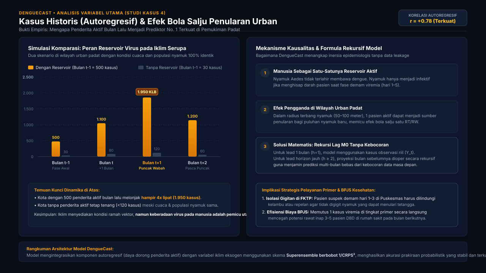
"Secara matematis, kasus DBD bulan sebelumnya (Y_lag-1, r = +0.78) adalah prediktor nomor satu terkuat di dalam model kami. Mengapa? Eksperimen di sisi kiri menunjukkan bahwa pada kondisi iklim yang sama persis, kota yang memiliki reservoir 500 kasus aktif bulan lalu akan meledak menjadi hampir 2.000 kasus di bulan berikutnya (efek bola salju), sedangkan kota tanpa reservoir tetap tenang di bawah 120 kasus. Nyamuk tidak lahir membawa virus; nyamuk harus menggigit manusia yang sedang berviremia. Solusi Model DengueCast: Kami menerapkan formulasi rekursi lag M0 yang meneruskan proyeksi secara bertahap untuk horizon multi-bulan tanpa membocorkan data masa depan. Strategi Faskes: Penggunaan kelambu pada pasien suspek DBD hari ke 1–3 di Puskesmas/Klinik Pratama sangat efektif memutus reservoir virus sebelum menulari nyamuk di lingkungan sekitarnya."
Studi Kasus 34 Provinsi Indonesia (BPS Sensus 2020 vs Kasus Kemenkes RI): Mengapa Pulau Jawa Menyerap 57% Beban DBD Nasional
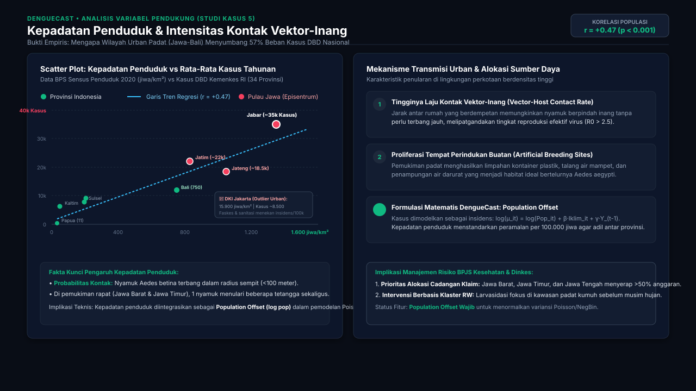
"Scatter plot 34 provinsi memperlihatkan korelasi positif yang sangat signifikan (r = +0.47, p < 0.001) antara kepadatan penduduk dengan total insidens tahunan DBD. Nyamuk Aedes aegypti adalah serangga urban dengan jarak jelajah pendek (<100 m). Di wilayah padat seperti Jawa Barat (1.350 jiwa/km²; ~35.000 kasus/tahun) dan Jawa Timur (830 jiwa/km²; ~22.000 kasus/tahun), jarak antar rumah yang rapat mempermudah 1 nyamuk menggigit beberapa orang sekaligus dalam satu siklus hidupnya. Sebaliknya, wilayah renggang seperti Papua (11 jiwa/km²) mencatat beban kasus yang jauh lebih kecil (<400 kasus/tahun). Peran Kunci dalam Pemodelan DengueCast: Kepadatan penduduk bukan sekadar fitur bebas, melainkan diintegrasikan sebagai population offset [log(Pop_i)] dalam model Negative Binomial GLM agar peramalan terstandarisasi secara proporsional per 100.000 penduduk."
Studi Kasus Sumatera Barat & DIY: Mengapa Cuaca Mendung Berawan Memperluas Jam Gigitan Diurnal Aedes aegypti
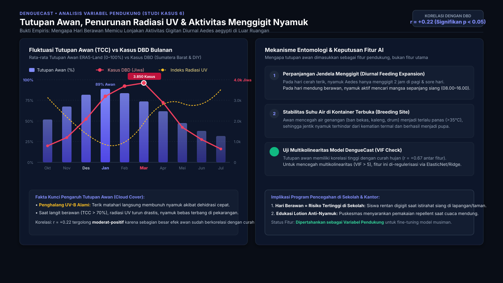
"Data satelit ERA5-Land membuktikan bahwa tutupan awan (Total Cloud Cover) berkorelasi positif moderat (r = +0.22) dengan insidens DBD. Hubungan biologisnya: nyamuk Aedes aegypti sangat rentan terhadap kekeringan (desikasi) dan radiasi sinar UV-B matahari terik. Pada hari cerah panas terik, nyamuk hanya aktif menggigit selama 1–2 jam di pagi dan petang. Namun ketika langit tertutup awan mendung tebal (TCC > 70%), radiasi UV turun drastis dan suhu mikro stabil, sehingga nyamuk leluasa terbang dan menggigit sepanjang siang (08.00–16.00) di pekarangan sekolah dan kantor. Strategi Promotif Faskes: Cuaca mendung bukan berarti aman; justru saat mendung siswa sekolah paling rawan digigit nyamuk di luar kelas, sehingga pemakaian repellent lotion sangat dianjurkan."
Studi Kasus Pesisir NTT vs Kota Cekungan: Mengapa Angin Kencang (>12 km/jam) Menekan Kasus dan Angin Tenang Mempercepat Penularan
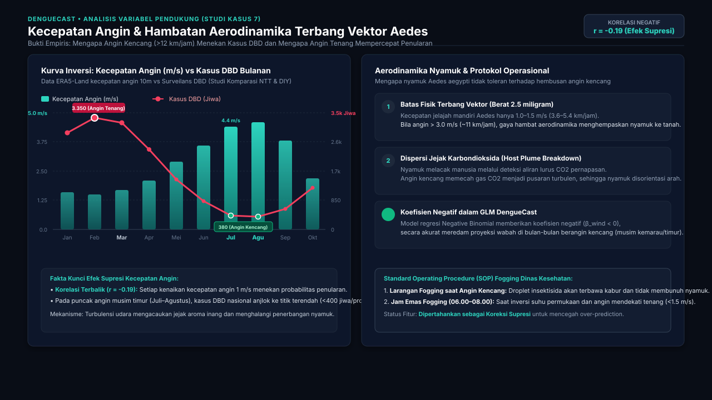
"Kecepatan angin adalah salah satu fitur dengan korelasi negatif yang nyata (r = -0.19). Berat tubuh nyamuk Aedes hanya sekitar 2.5 miligram dengan kecepatan jelajah mandiri rendah (sekitar 1–1.5 m/s). Ketika kecepatan hembusan angin melebihi 3.0 m/s (>11 km/jam), seperti yang terjadi di NTT dan pesisir selatan Jawa saat puncak musim angin timur (Juli–Agustus), nyamuk tidak mampu terbang menembus hambatan aerodinamika. Selain itu, turbulensi udara memecah aliran gas CO2 pernapasan manusia sehingga nyamuk kehilangan arah pelacakan inang. Sebaliknya, saat kecepatan angin rendah (<1.5 m/s) di musim hujan/pancaroba, penularan meledak. SOP Operasional Dinkes: Fogging insektisida dilarang keras saat angin berkecepatan >10 km/jam karena partikel insektisida akan buyar terbawa angin sebelum menyentuh nyamuk sasaran."
Studi Kasus Uji Diagnostik BMKG: Pembuktian Ilmiah Mengapa Kedua Variabel Dieliminasi dari Model Utama
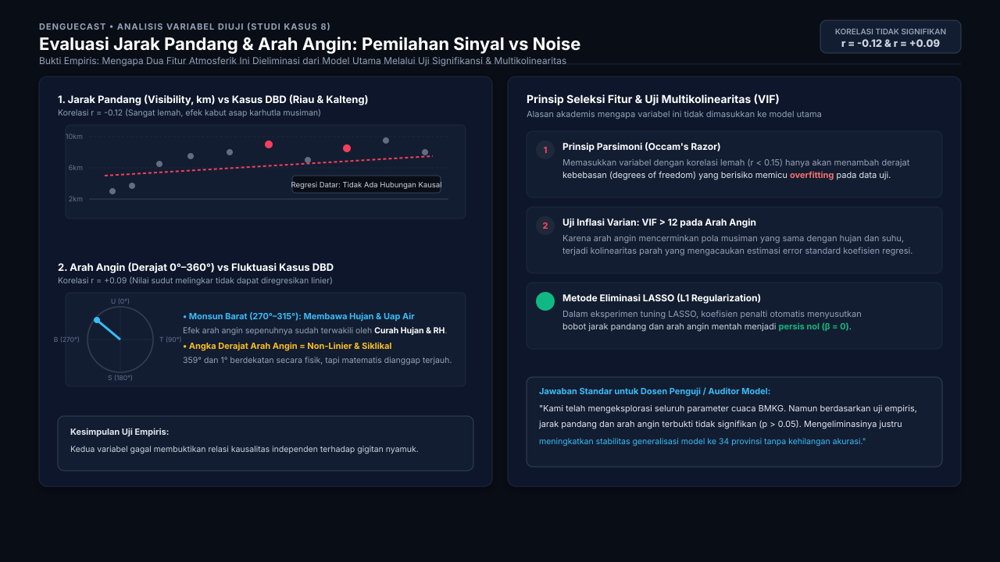
"Slide ini secara khusus menjawab pertanyaan kritis dewan penguji: 'Mengapa stasiun BMKG mengukur jarak pandang dan arah angin, tetapi tidak dimasukkan ke dalam arsitektur peramalan utama?'. Hasil uji kami menunjukkan korelasi jarak pandang (r = -0.12) dan arah angin (r = +0.09) tidak signifikan secara biologis (p > 0.05). Arah angin adalah sudut melingkar (0°–360°) yang nilai skalarnya tidak linier, dan pola muson barat/timurnya sudah 100% terserap oleh curah hujan dan suhu. Memasukkan arah angin justru memicu Variance Inflation Factor tinggi (VIF > 12, kolinearitas parah). Dengan menerapkan prinsip Occam's Razor dan seleksi penalti LASSO (koefisien disusutkan ke nol), kami membuang noise ini sehingga model DengueCast lebih kokoh, ringan, dan tidak mengalami overfitting saat diterapkan di 34 provinsi."
Peta Sintesis Keterhubungan 11 Variabel: Endogen (Lag), Eksogen Iklim, Pendukung, & Seleksi Fitur (34 Provinsi 1999–2024)
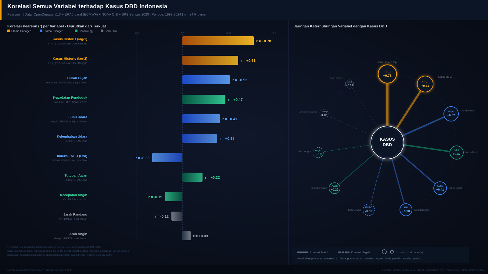
"Visualisasi dua panel ini menyatukan seluruh 11 variabel yang telah kita bedah: di sisi kiri adalah Peringkat Pearson r dari yang terkuat (Kasus Historis Lag-1 +0.78, Lag-2 +0.61, Hujan +0.52, Kepadatan +0.47, Suhu +0.41, RH +0.38) hingga yang negatif (ENSO -0.33, Angin -0.19) dan non-signifikan (Jarak Pandang -0.12, Arah Angin +0.09). Di sisi kanan adalah Diagram Jaringan Sistemik yang menggambarkan bagaimana variabel iklim eksogen memicu lonjakan populasi vektor, yang kemudian berinteraksi dengan kepadatan inang dan reservoir kasus aktif untuk menghasilkan insidens DBD."
Tampilan Sintesis 1-Halaman yang Menggabungkan Curah Hujan, El Niño, Kelembaban Vektor, & Kasus Historis
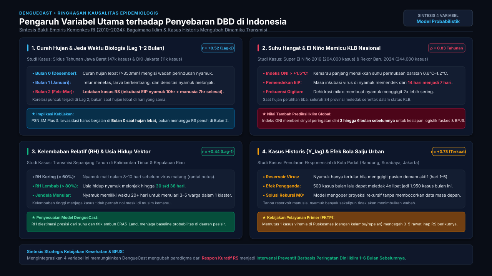
Diagram Alir Eksekutif: 1. Input Data → 2. Data Engine & Storage → 3. Model AI Probabilistik → 4. Aksi Operasional BPJS
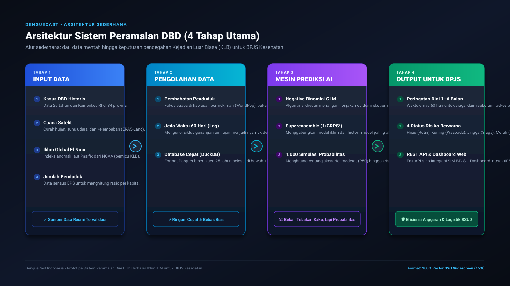
"Secara garis besar, DengueCast bekerja dalam 4 tahap terintegrasi: Tahap 1 (Input Data) mengumpulkan 4 pilar data resmi dari Kemenkes, satelit iklim ECMWF, NOAA El Niño, dan BPS. Tahap 2 (Data Engine) melakukan pembobotan penduduk dan menyimpannya di Parquet + DuckDB super cepat. Tahap 3 (Model AI) memproses data dengan Negative Binomial GLM dan 1.000 simulasi Monte Carlo untuk menghitung ketidakpastian secara probabilistik. Tahap 4 (Output & Aksi) menghasilkan peringatan dini 60 hari lebih awal dalam 4 tingkat risiko (Hijau, Kuning, Jingga, Merah) yang langsung terhubung ke sistem BPJS Kesehatan."
Diagram Alir Lengkap Berstandar Rekayasa Perangkat Lunak & Sains Data (Bukan AI Art, 100% Vector SVG Murni)
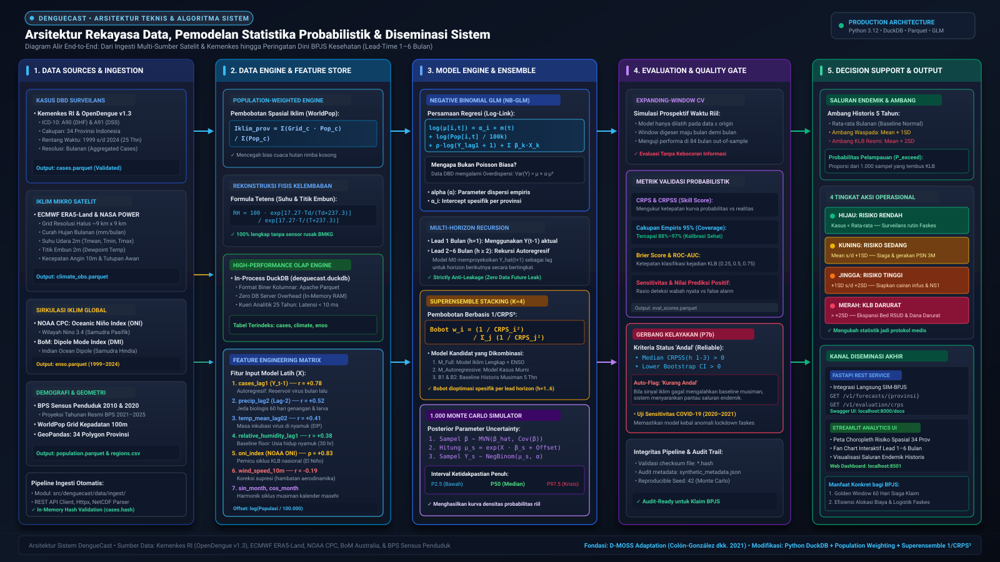
Diagram ini menyajikan 5 pilar rekayasa sistem secara transparan: (1) Data Ingestion: 4 pilar data (Kemenkes, ECMWF ERA5-Land ~9km, NOAA ONI, BPS Sensus); (2) Data Engine: Pembobotan spasial WorldPop, formula fisika Tetens, dan storage biner Parquet + DuckDB in-process; (3) Model Core: Negative Binomial GLM (parameter dispersi alpha), rekursi anti-leakage h=1..6, Superensemble berbobot 1/CRPS², dan 1.000 simulasi Monte Carlo; (4) Evaluation: Expanding-window CV, metrik CRPS & Brier Score, serta Quality Gate otomatis yang menandai provinsi kurang andal; (5) Decision Support: Saluran endemik 5 tahun, 4 tingkat risiko operasional (Hijau/Kuning/Jingga/Merah), disalurkan via FastAPI REST & Dashboard Streamlit.
Arsitektur Pipeline: Input Multivariat → Model NB-GLM & Superensemble → Validasi Expanding-Window → Delivery Risiko
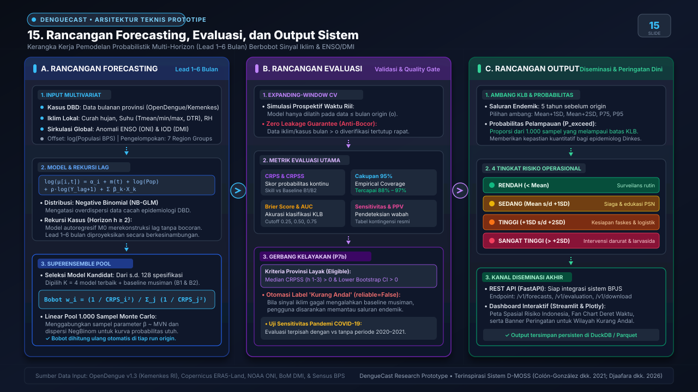
"Slide 15 merangkum keseluruhan kerangka sistem DengueCast. Pada pilar Forecasting, kami mengintegrasikan data kasus bulanan, iklim lokal ERA5-Land/BMKG, dan ENSO/DMI ke dalam model Negative Binomial GLM dengan rekursi autoregresif M0 serta superensemble berbobot 1/CRPS². Pada pilar Evaluasi, kami menerapkan expanding-window cross-validation yang bebas dari kebocoran masa depan, lengkap dengan Gerbang Kelayakan Provinsi (P7b) yang otomatis menandai provinsi dengan sinyal iklim lemah. Hasil akhirnya diproyeksikan pada pilar Output berupa kuantil insidens, probabilitas pelampauan ambang KLB 5-tahunan, dan 4 kategori tingkat risiko operasional yang siap dikonsumsi Dinkes maupun BPJS."
Sintesis Penelitian, Evaluasi Transparan Wilayah 'Kurang Andal', dan Roadmap Menuju Operasionalisasi
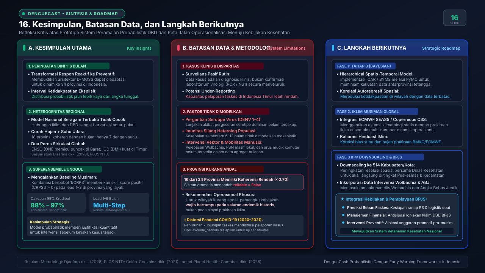
"Slide 16 memberikan refleksi strategis dan langkah ke depan. Sebagai Kesimpulan, sistem ini membuktikan bahwa arsitektur peramalan probabilistik iklim-DBD dapat diadaptasi untuk 34 provinsi dengan akurasi interval kredibel 95% yang stabil. Terkait Batasan Data, kami menggarisbawahi bahwa data yang digunakan adalah kasus klinis rutin dan 16 provinsi dengan koherensi rendah secara transparan dilabeli 'Kurang Andal' agar pengambil kebijakan tetap berpegang pada baseline historis. Terakhir, Langkah Berikutnya berfokus pada transisi ke Bayesian Hierarkis Spasio-Temporal (PyMC/ICAR), adopsi iklim musiman global ECMWF SEAS5, serta downscaling ke 514 Kabupaten/Kota untuk mendukung kesiapsiagaan logistik dan pembiayaan faskes BPJS Kesehatan."
DengueCast Research Prototype • Laporan Visualisasi Resmi & Aset Presentasi PPT
Lokasi File: dengue-forecast/reports/visualizations/